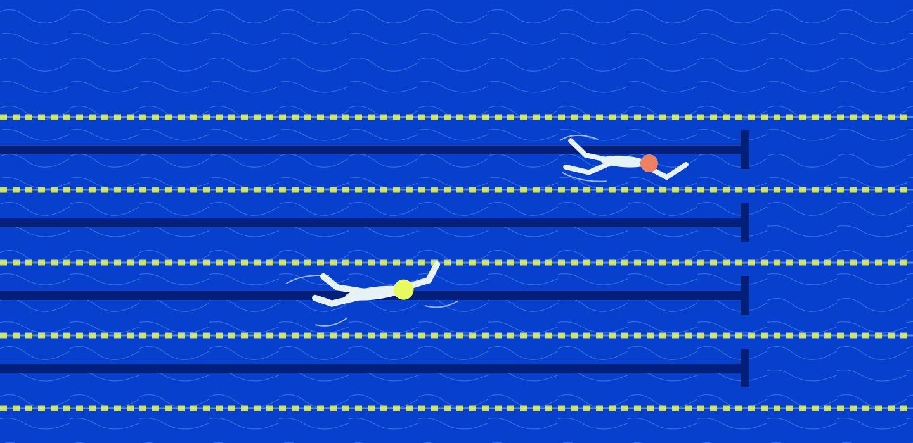

Saturday, 17 October
North Pool · 09:00–12:45
North Pool · 09:00–12:45
A little less effort. A little more distance. Find the technique that makes the next length feel different.

FIND YOURFLOW
Five focused sessions.
Pick the three that move you forward.
ONE LENGTH AT A TIME
Breathing, balance, catch, turns and pace. A morning built around the parts of swimming we tend to rush.
01
Breathing without breaking rhythm
09:00–09:40New lap swimmers02
Balance from fingertips to toes
09:55–10:40All lap swimmers03
A calmer catch, a longer stroke
11:00–11:50Regular lap swimmers04
Flip turns without the rush
11:10–11:50Regular lap swimmers05